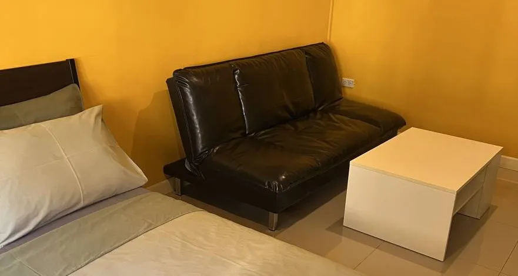

ที่พักใกล้อิมแพ็ค เมืองทอง สำหรับครอบครัวมีเด็กเล็ก — ห้อง 4 คน เด็กฟรีถึง 4 ขวบ

งานที่ อิมแพ็ค เมืองทองธานี หลายงานเป็นงานที่พาเด็กไปได้ — งานสัตว์เลี้ยง งานมอเตอร์เอ็กซ์โป งานหนังสือ คอนเสิร์ตครอบครัว แต่พอมีเด็กเล็กติดมาด้วย เกณฑ์เลือกที่พักเปลี่ยนไปหมด จากที่เคยดูแค่ "ใกล้ไหม ถูกไหม" กลายเป็น "นอนกันได้กี่คน" "เด็กมีที่ขยับไหม" และ "คืนนี้เขาจะหลับได้จริงหรือเปล่า"
3 อย่างที่ต่างไปเมื่อพาเด็กเล็กมาด้วย
| สิ่งที่ต้องเช็ค | ทำไมถึงสำคัญ | บ้านเพิ่มสุข |
|---|---|---|
| นอนได้กี่คน | จองสองห้องแยกกันแพงกว่าและดูแลเด็กยาก | ห้องแฟมิลี่พักได้ 4 ท่าน 1,890 บาท/คืน |
| เด็กคิดเงินไหม | บางที่คิดเพิ่มตั้งแต่ 3 ขวบ | เด็กไม่เกิน 4 ขวบพักฟรี เมื่อนอนเตียงเดียวกับผู้ปกครอง |
| ที่ให้เด็กขยับ | นั่งรถ+เดินงานทั้งวัน เด็กต้องได้ปล่อยพลัง | บ้านสวนชั้นเดียว เดินออกจากห้องคือสวน |
| ความเงียบตอนกลางคืน | เด็กตื่นกลางดึกแล้วกล่อมยาก | อยู่ในซอย ไม่ติดถนนใหญ่ ทั้งหมด 21 ห้อง |
| กลับดึกได้ไหม | เด็กมักหลับคาที่ตั้งแต่ยังไม่ถึงที่พัก | พนักงาน 24 ชม. ไม่มีเวลาล็อกประตู |
| สระว่ายน้ำ | บางครอบครัวมาเพื่ออันนี้โดยเฉพาะ | ไม่มี — ถ้าเด็กอยากว่ายน้ำ ที่นี่ไม่ตอบโจทย์ |
ทำไมบ้านชั้นเดียวถึงต่างกับตึกสูง
โรงแรมย่านเมืองทองส่วนใหญ่เป็นอาคารสูงติดถนนใหญ่ ซึ่งกับเด็กเล็กแปลว่า ต้องคอยจับมือตอนรอลิฟต์ ระวังระเบียง และเปิดหน้าต่างไม่ได้เพราะเสียงรถ
บ้านเพิ่มสุขเป็น บ้านสวนชั้นเดียวแบบค็อทเทจ 21 ห้อง เปิดประตูห้องออกมาก็ถึงพื้นสวนเลย ไม่มีบันไดไม่มีลิฟต์ให้ต้องคอยระวัง พ่อแม่นั่งดื่มกาแฟหน้าห้องแล้วมองเห็นลูกได้ตลอด และเพราะอยู่ในซอย กลางคืนจึงเงียบพอที่เด็กจะหลับยาว
ระยะ 7-10 นาที มีค่ากว่าที่คิดเมื่อมีเด็ก
เด็กเล็กมักหมดแรงก่อนงานเลิก ที่พักที่ห่างออกไป 3.8 กิโลเมตร ขับรถ 7-10 นาที ทำให้พากลับมางีบกลางวันแล้วออกไปต่อรอบบ่ายได้ โดยไม่เสียทั้งวัน และเพราะทุกฮอลล์ของอิมแพ็คอยู่ในคอมเพล็กซ์เดียวกัน ระยะทางจึงเท่ากันไม่ว่างานจะจัดที่ฮอลล์ไหน
ห้องแฟมิลี่พักได้ 4 ท่าน 1,890 บาท/คืน รวมอาหารเช้า · เด็กไม่เกิน 4 ขวบพักฟรี
เช็คห้องว่างผ่าน LINEคำถามที่พบบ่อยจากครอบครัวที่มีเด็กเล็ก
พาเด็กเล็กมางานที่อิมแพ็ค ควรเลือกที่พักแบบไหน?
มองสามอย่างที่ต่างจากตอนมาคนเดียว — ห้องที่นอนได้ทั้งครอบครัวโดยไม่ต้องจองสองห้อง, พื้นที่ให้เด็กได้ขยับหลังนั่งรถและเดินงานมาทั้งวัน และความเงียบพอที่เด็กจะหลับได้จริงตอนกลางคืน ส่วนระยะทางถึงงานยิ่งใกล้ยิ่งดีเพราะเด็กเล็กมักหมดแรงกลางทางแล้วต้องพากลับก่อน
ห้องครอบครัวพักได้กี่คน ราคาเท่าไหร่?
ห้องแฟมิลี่ของบ้านเพิ่มสุขพักได้ถึง 4 ท่าน ราคา 1,890 บาทต่อคืน รวมอาหารเช้าและที่จอดรถฟรีแล้ว ถ้ามากันสองคนผู้ใหญ่กับเด็กเล็ก ห้องมาตรฐาน 1,090 บาทต่อคืนก็พอ
เด็กพักฟรีถึงอายุเท่าไหร่?
เด็กอายุไม่เกิน 4 ขวบพักฟรีเมื่อนอนเตียงเดียวกับผู้ปกครอง ไม่คิดค่าใช้จ่ายเพิ่ม ถ้าอยากได้เตียงเสริมคิดเพิ่ม 300 บาทต่อคืน
มีสระว่ายน้ำให้เด็กเล่นไหม?
ไม่มีครับ ที่นี่ไม่มีสระว่ายน้ำและไม่มีฟิตเนส สิ่งที่มีคือพื้นที่สวนร่มรื่นรอบห้องพักให้เด็กได้เดินเล่น ถ้าครอบครัวตั้งใจมาเพื่อให้เด็กได้ว่ายน้ำ ที่นี่อาจไม่ตอบโจทย์ครับ
ห้องพักเป็นตึกสูงหรือเปล่า เด็กวิ่งแล้วอันตรายไหม?
เป็นบ้านสวนชั้นเดียวแบบค็อทเทจ 21 ห้อง ไม่ใช่ตึกสูง เดินออกจากห้องคือสวน ไม่มีระเบียงสูงหรือลิฟต์ที่ต้องคอยระวัง และตัวโรงแรมอยู่ในซอย ไม่ติดถนนใหญ่
พาสัตว์เลี้ยงมาพร้อมเด็กได้ไหม?
ได้ครับ มีห้อง Pet Friendly รับทั้งสุนัขและแมว ค่าดูแล 300 บาทต่อตัวต่อคืน หลายครอบครัวที่ไม่อยากฝากน้องไว้ที่บ้านเลือกพามาด้วยเลย
กลับจากงานดึก เด็กหลับคาที่ เข้าที่พักได้ไหม?
ได้ครับ มีพนักงานดูแล 24 ชั่วโมง ไม่มีเวลาล็อกประตู กลับมาดึกแค่ไหนก็อุ้มเด็กเข้าห้องได้เลย
สรุป
พาเด็กเล็กมางานที่อิมแพ็ค สิ่งที่ควรดูคือห้องนอนได้ครบไหม เด็กคิดเงินตั้งแต่กี่ขวบ มีที่ให้ขยับหรือเปล่า และกลางคืนเงียบพอจะหลับไหม ถ้าครอบครัวคุณต้องการสระว่ายน้ำ ที่นี่ตอบไม่ได้ แต่ถ้าอยากได้พื้นที่สวนกับความเงียบในระยะขับรถ 10 นาทีจากงาน ลองทักมาคุยกันได้ครับ